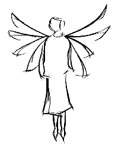

|
Welcome to the Homewrecker's site. The Homewrecker is first and foremost a paper based literary magazine originating in Rochester, NY and is a member of Hell's Kitchen. If you're interested in reading the Homewrecker, you might want to get a subscription. Or, if you're interested in helping out or contributing information, you should contact the editor via wrecker@iname.com.
|  |
Material presented for your entertainment:
|